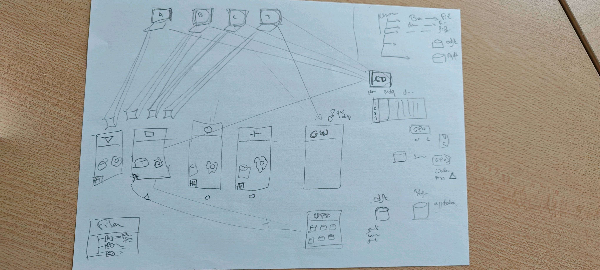

💻
System
Installation , Réinitialisation et configuration d'appareil.
PORTFOLIO
Étudiant en BTS SIO, passionné par l'informatique, le développement et les nouvelles technologies. Découvrez ici mon parcours, mes compétences, mon stage et mes projets.
BTS SIO SISR
01 — À PROPOS
Je suis actuellement étudiant en BTS Services Informatiques aux Organisations (SIO). Cette formation m'a permis de développer des compétences en informatique, en réseau, en développement et en gestion de projets.
J'ai également réalisé un stage en entreprise, qui m'a permis de découvrir le fonctionnement d'un service informatique professionnel et de mettre en pratique mes connaissances.
02 — SAVOIR-FAIRE
Installation , Réinitialisation et configuration d'appareil.
configuration et administration de systèmes et réseaux.
Documentation des états des switch /routeurs
03 — EXPÉRIENCE
St Trojan • Service informatique
L'entreprise est une association Privée a but non lucratif qui aide les personnes handicapé. L'ATASH c'est le centre de l'association qui gère plusieurs batiment (Bourcefranc : Louvois ), (Stjuste Luzac: SAMSAH) et (Corme royal : Domaine du Grand Pré) Donc moi j'ai fait mon stage dans le batiment responsable de l'admistration et de l'informatique. Mon maitre de stage est le seul responsable technique pour toute l'association avec l'aide de quelque préstataire.
04 — RÉALISATIONS
Création d'un dispositif de travail a distance afin d'avoir acces a sa session d'utilisateur dirrectement depuis chez nous.

Mise en place de session directement heberger sur un serveur et non sur le poste afin de permettre d'avoir sa session avec les fichiers enregistré dessus avec n'importe quel appareil.
05 — ACTIVITÉS & COMPÉTENCES
Voici les principales activités réalisées pendant ma formation et mon stage, ainsi que les compétences mobilisées pour chacune d'elles.
| Activité | Compétences associées |
|---|---|
Réinitialisation d'appareils
Remise en état et préparation des équipements pour les utilisateurs.

|
|
| Réinitialisation d'appareils Remise en état et préparation des équipements pour les utilisateurs. | |
| Assistance aux utilisateurs Intervention pour résoudre les problèmes informatiques rencontrés par les utilisateurs. | |
| Configuration du réseau Participation à la configuration et à l'administration de l'infrastructure réseau. | |
| Documentation du matériel réseau Recensement et suivi de l'état des switchs. | |
| Maintenance informatique Entretien, suivi et réparation du matériel informatique de l'entreprise. |
05 — CONTACT
Tu peux me contacter pour discuter de mon parcours, de mes projets ou de mes compétences.